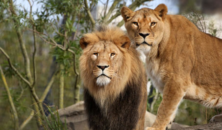
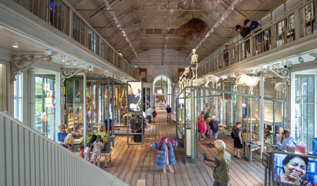
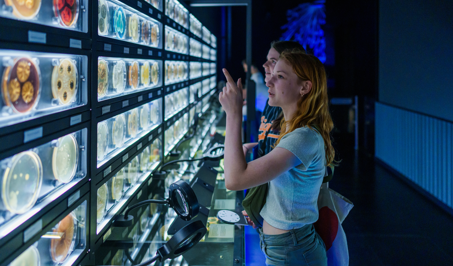
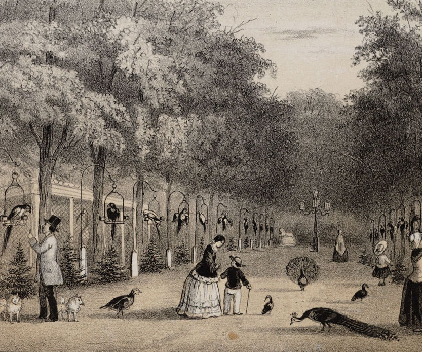
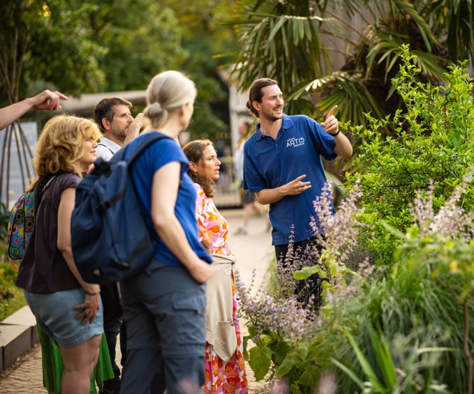

Artis
-
Artis park
In ARTIS-Park ontmoet je dieren en planten uit alle hoeken van de wereld, en geeft het Planetarium je een uniek perspectief.
ontdek artis-park plan je bezoek reis door de ruimte -
Artis groote museum
ARTIS-Groote Museum is een interactief natuurmuseum. Word één met alles om je heen!
ontdek artis-Groote museum plan je bezoek tentoonstellingen -
Artis micropia
In ARTIS-Micropia ontdek je hoe microben – onzichtbaar, maar overal aanwezig – ons leven beïnvloeden.
ontdek artis-Micropia plan je bezoek
Hier, in het hart van Amsterdam, voel en ervaar je natuur in al haar facetten.
Natuur raakt ons allemaal, maar we vragen meer van haar dan ze kan geven.
Daarom is het essentieel om onze band met natuur te versterken. Deze visie drijft ons dagelijks. Niet alleen als ideaal, maar als een oproep tot gezamenlijke actie voor een leefbare aarde, voor de generaties van vandaag en morgen.
missie van ARTISSinds 1838 een plek waar mens en natuur samenkomen
Als eerste publieke dierentuin van Nederland – en nog altijd één van de vijf oudste ter wereld – is ARTIS uitgegroeid tot een inspirerende plek middenin de stad, waar natuureducatie en -beleving hand in hand gaan.
geschiedenis van ARTISLeer van natuur
Van familieuitje tot schoolreisje, elk bezoek aan ARTIS is educatief. In ARTIS-Park, Micropia en het Groote Museum ontdek je hoe al het leven met elkaar verbonden is. ARTIS wil haar bezoekers niet alleen laten leren van natuur, maar hen ook inspireren om deze kennis toe te passen en mee te bouwen aan een duurzame toekomst.
lees meer-
140k
scholieren en studenten
-
26
rijksmonumenten
-
14
natuurbehoud projecten
-
20
natuureducatieve activiteiten per dag